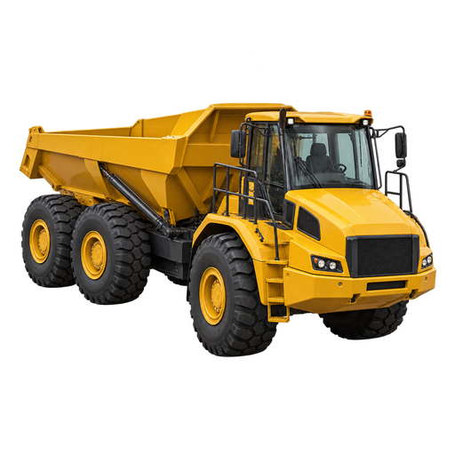

Loading assets…
Display assets only. Rotatable models are simplified for speed; use the original STL/3MF for printing. Saved plate thumbnails may predate file edits and require Bambu review.

Display assets only. Rotatable models are simplified for speed; use the original STL/3MF for printing. Saved plate thumbnails may predate file edits and require Bambu review.